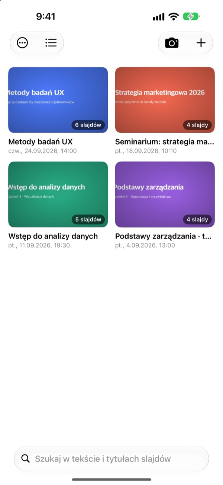
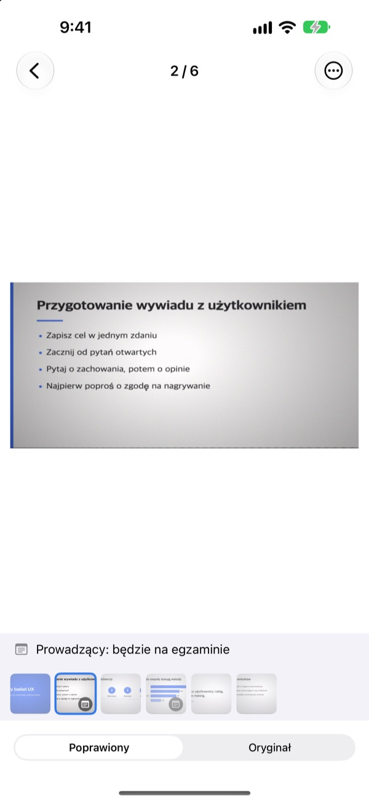
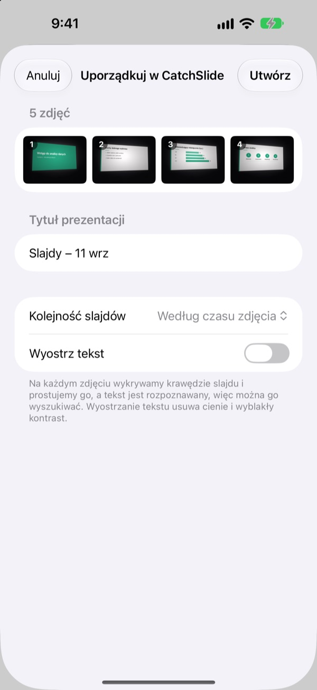
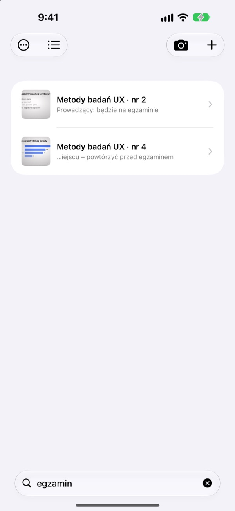

Zdjęcie z boku.
Slajd na wprost.
Aparat znajduje wszystkie cztery rogi slajdu, prostuje go i odcina to, co dookoła. Slajdy fotografowane jeden po drugim trafiają do tej samej prezentacji.
Jeden zakup, wszystkie funkcje. Bez subskrypcji i bez konta.

Wyprostuj go sam
To zdjęcie zrobiono pod kątem z bocznego miejsca na sali. Zielona ramka pokazuje, gdzie znaleziono rogi slajdu.
Otwierasz galerię przed kolokwium i nie możesz znaleźć slajdu?
Slajdy z ostatnich rzędów zawsze wychodzą krzywo i giną między selfie a paragonami. W cichej sali sam dźwięk migawki skutecznie zniechęca. CatchSlide robi zdjęcia bezgłośnie, prostuje każdy slajd i trzyma je razem według prezentacji.
Prosto od razu
Aparat na żywo śledzi cztery rogi slajdu i robi się zielony, gdy je złapie. Nawet zdjęcie zrobione pod kątem wygląda jak zrobione na wprost, bez tła dookoła.
Bez dźwięku migawki. Włącz Automatyczne zdjęcia, a każdy nowy slajd zostanie sfotografowany sam, z pominięciem poruszonych ujęć.

Stare zdjęcia, wszystkie naraz
Wybierz kilka zdjęć z wykładu w aplikacji Zdjęcia i udostępnij je w CatchSlide. Zostaną wyprostowane i zapisane jako jedna prezentacja, w kolejności robienia.Wyostrz tekst usuwa cienie i wyblakły kontrast.

Wystarczy jedno słowo
CatchSlide odczytuje tekst każdego slajdu bezpośrednio na urządzeniu. Nawet po kilku tygodniach jedno słowo zaprowadzi cię do właściwego slajdu.
Notatki przy slajdach też da się przeszukiwać. Dopisz egzamin do kilku z nich, a cały materiał na egzamin znajdziesz jednym wyszukiwaniem.

Zacznij w trzech krokach
- 1
Otwórz aparat
Przyciskiem na liście, widżetem na ekranie początkowym albo z ekranu blokady.
- 2
Złap slajd w kadrze
Gdy rogi zrobią się zielone, zrób zdjęcie albo zostaw to automatycznym zdjęciom.
- 3
Wracaj do prezentacji
Szukaj, dodawaj notatki i eksportuj PDF do nauki.
Co możesz zrobić z prezentacją
- Nagrywanie
- Nagrywaj dźwięk podczas robienia zdjęć, a potem odsłuchaj każdy slajd od chwili, w której go sfotografowałeś
- Transkrypcja
- Zamienia nagranie na tekst, pokazuje, co mówiono przy każdym slajdzie, i bierze udział w wyszukiwaniu
- Podsumowanie AI
- Streszcza prezentację na podstawie tekstu slajdów i transkrypcji (iOS 26 lub nowszy na urządzeniach z Apple Intelligence)
- Materiały do powtórki z jednym, dwoma albo czterema slajdami na stronie
- Markdown
- Plik .zip gotowy do Notion albo Obsidian
- PowerPoint
- Eksport do .pptx z transkrypcją w notatkach prelegenta
- Łączenie
- Wybierz kilka prezentacji i połącz je w jedną
- Synchronizacja iCloud
- Po włączeniu zobaczysz prezentacje na innych urządzeniach z tym samym Apple ID. Domyślnie wyłączona
- Widżety
- Otwierają aparat prosto z ekranu początkowego albo ekranu blokady
Rozpoznawanie tekstu, transkrypcja i podsumowania AI działają na urządzeniu.
Kupujesz raz, masz wszystko
CatchSlide
- Bezgłośne zdjęcia, automatyczne zdjęcia i prostowanie
- Import wielu zdjęć naraz z aplikacji Zdjęcia
- Slajdy według prezentacji, wyszukiwanie w tekście i notatkach
- Nagrywanie, transkrypcja i podsumowanie AI
- Eksport do PDF, Markdown i PowerPoint
- Synchronizacja iCloud i widżety
Napiwek (dobrowolny)
- Jeśli aplikacja ci pomaga, możesz zostawić twórcy mały napiwek
- Napiwek niczego nie odblokowuje. Wszystkie funkcje działają i bez niego
Znajdziesz go na ekranie Moje dane.
Bez subskrypcji i bez płatnych dodatków. Cenę w swoim kraju sprawdzisz w App Store.
Najczęstsze pytania
Jak zrobić zdjęcie slajdu?
Otwórz aparat i złap slajd w kadrze. Gdy rogi zrobią się zielone, naciśnij migawkę. Przy włączonych automatycznych zdjęciach kolejny slajd zostanie sfotografowany sam za każdym razem, gdy się zmieni.
Czy słychać migawkę?
Nie. Kadr jest zapisywany prosto z podglądu aparatu, więc w każdym kraju jest cicho.
Dlaczego moje zdjęcia trafiły do jednej prezentacji?
Jeśli kolejne zdjęcie zrobisz w ciągu 5 minut od poprzedniego, trafia do tej samej prezentacji. Stuknij tytuł na liście, by zmienić nazwę, a rozdzielone prezentacje połącz przez Połącz prezentacje.
Czy mogę dodać zdjęcia, które już mam?
Tak. Zaznacz je w aplikacji Zdjęcia i udostępnij w CatchSlide albo stuknij ＋ na liście i wybierz Importuj ze Zdjęć. Zostaną wyprostowane i zapisane jako jedna prezentacja w kolejności robienia.
Rogi zostały źle wykryte.
Otwórz slajd, wybierz Dopasuj rogi w menu ⋯ i przeciągnij cztery rogi na miejsce. Wykryj automatycznie poszuka ich od nowa, a Cały obraz użyje całego zdjęcia. Oryginał jest zawsze zachowany, więc możesz to powtórzyć w każdej chwili.
Czy mogę szukać w tekście slajdów?
Wpisz słowo w pole wyszukiwania nad listą. Szukanie obejmuje tekst slajdów, tytuły prezentacji, notatki i transkrypcje, a wynik od razu otwiera slajd. Rozpoznawanie tekstu odbywa się na urządzeniu.
Jak wyeksportować PDF?
W prezentacji otwórz menu udostępniania, wybierz Eksportuj do PDF i ustaw jeden, dwa albo cztery slajdy na stronie. Z arkusza udostępniania zapiszesz go w Plikach albo wyślesz do innej aplikacji.
Jak zmienić kolejność lub usunąć slajdy?
W prezentacji przytrzymaj slajd i przeciągnij go. W tym samym menu usuniesz lub udostępnisz pojedynczy slajd, a przez Wybierz usuniesz kilka naraz.
Jak działa nagrywanie i podsumowanie AI?
Włącz Nagrywaj u góry aparatu, a każdy slajd zachowa dźwięk z tamtej chwili. W Notatki do prezentacji opcja Podsumuj z AI przygotuje streszczenie na podstawie tekstu slajdów i transkrypcji. Wymaga to iOS 26 lub nowszego na urządzeniu z Apple Intelligence.
Gdzie są przechowywane moje slajdy i nagrania?
Na twoim urządzeniu. Trafiają do twojego własnego iCloud tylko wtedy, gdy włączysz Synchronizacja w Moje dane, a konto nie jest potrzebne. Więcej w Polityce prywatności.
Pytania, błędy albo pomysły? Napisz na leeo@kakao.com.